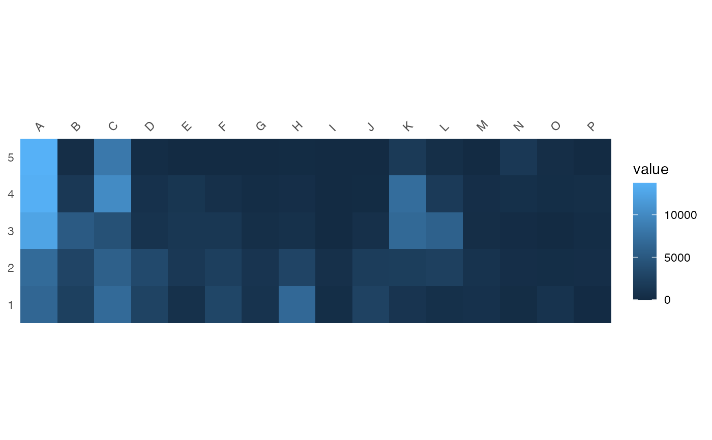
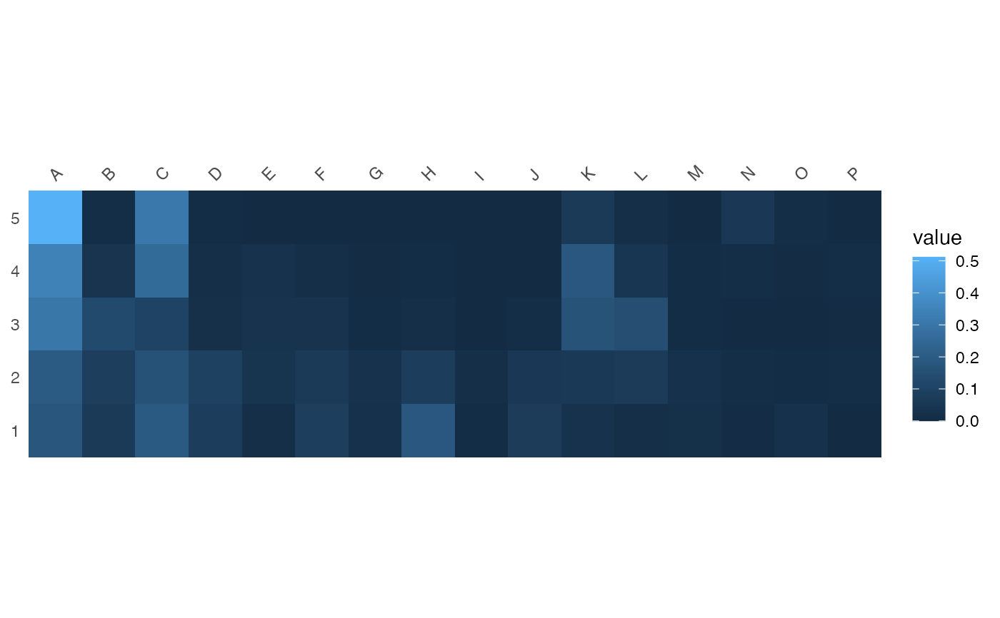
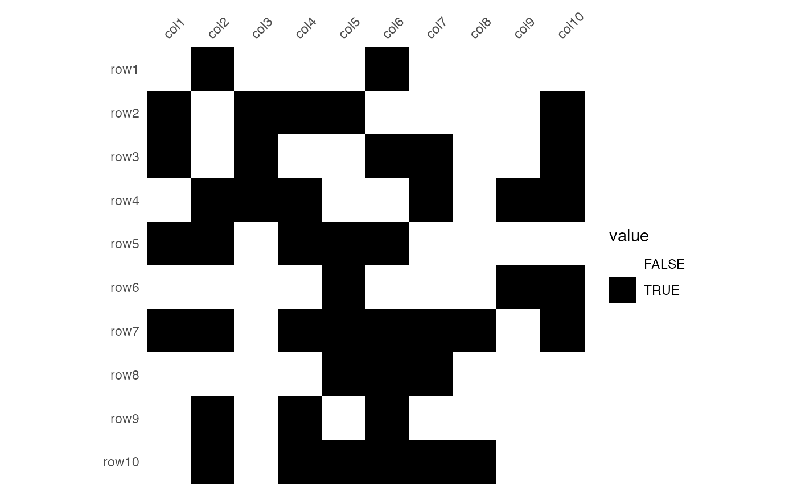

Plots a heatmap.
plot_heatmap(object, ...) # S4 method for CountMatrix plot_heatmap(object, PVI = FALSE, frequency = TRUE) # S4 method for AbundanceMatrix plot_heatmap(object) # S4 method for IncidenceMatrix plot_heatmap(object)
| object | An object to be plotted. |
|---|---|
| ... | Further arguments to be passed to internal methods. |
| PVI | A |
| frequency | A |
A ggplot object.
If PVI is FALSE, it plots a heatmap of relative abundances
(frequency), otherwise percentages of the independence value are drawn (in
french, "pourcentages de valeur d'indépendance", PVI).
PVI is calculated for each cell as the percentage to the column
theoretical independence value: PVI greater than \(1\) represent
positive deviations from the independence, whereas PVI smaller than
\(1\) represent negative deviations (Desachy 2004).
The PVI matrix allows to explore deviations from independence
(an intuitive graphical approach to \(\chi^2\)),
in such a way that a high-contrast matrix has quite significant deviations,
with a low risk of being due to randomness (Desachy 2004).
Desachy, B. (2004). Le sériographe EPPM: un outil informatisé de sériation graphique pour tableaux de comptages. Revue archéologique de Picardie, 3(1), 39-56. DOI: 10.3406/pica.2004.2396.
N. Frerebeau
## Abundance data ## Coerce dataset to a count matrix (data from Desachy 2004) compiegne_count <- as_count(compiegne) ## Plot matrix diagram... ## ...without threshod (i.e. heatmap) plot_heatmap(compiegne_count)## ...with PVI as threshold (i.e. Bruno Desachy's matrigraphe) plot_heatmap(compiegne_count, PVI = TRUE) + ggplot2::scale_fill_gradient2(midpoint = 1)## Presence/absence data bin <- IncidenceMatrix(data = sample(0:1, size = 100, replace = TRUE), nrow = 10, ncol = 10) plot_heatmap(bin) + ggplot2::scale_fill_manual(values = c("TRUE" = "black", "FALSE" = "white"))